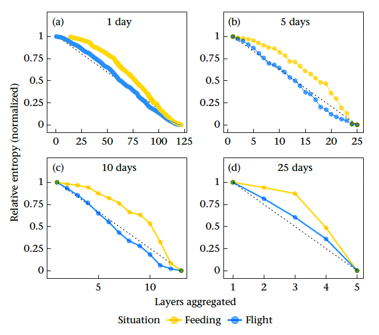
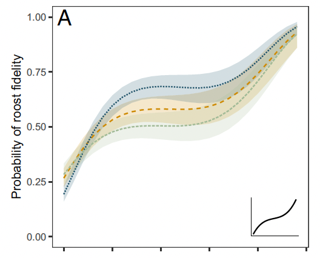
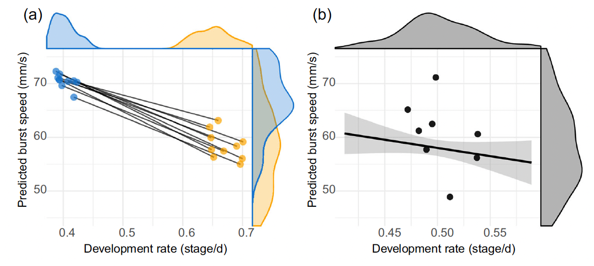

Publications
Gahm, K., Acácio, M., Anglister, N., Vaadia, G., Spiegel, O., & Pinter-Wollman, N. (In press). Relationship between spatial and social phenotypes in an avian scavenger. Journal of Animal Ecology. https://doi.org/10.1111/1365-2656.70316
Gahm, K., D’Bastiani, E., Anglister, N., Vaadia, G., Acácio, M., Spiegel, O., & Pinter-Wollman, N. (2026). Selection of timescales to study social network temporal dynamics in vultures. Animal Behaviour, 232, 123442. https://doi.org/10.1016/j.anbehav.2025.123442

Gahm, K., Spiegel, O., & Pinter-Wollman, N. (2026). How are social preferences realized? Considering the importance of space: A comment on De Moor et al. (2025). Behavioral Ecology, arag065. https://doi.org/10.1093/beheco/arag065
Russo, N. J., Gahm, K., Zuercher, M. E., Hernandez, K., Blakey, R. V., Niesner, C., & Abelson, E. (2026). Monitoring animal movement diversity as a component of biodiversity. Frontiers in Ecology and the Environment, e70038. https://doi.org/10.1002/fee.70038

Amin, N., Barnes, K., Crall, A., Gahm, K., Newman, S., Sutton-Kennedy, T., & Word, K. (2026). Community Organizing for STEM Professionals. QUBES Educational Resources. https://doi.org/10.25334/VWRN-8M23
Acácio, M., Gahm, K., Anglister, N., Vaadia, G., Hatzofe, O., Harel, R., Efrat, R., Nathan, R., Pinter-Wollman, N., & Spiegel, O. (2024). Behavioral plasticity shapes population aging patterns in a long-lived avian scavenger. Proceedings of the National Academy of Sciences, 121(35), e2407298121. https://doi.org/10.1073/pnas.2407298121

D’Bastiani, E., Anglister, N., Lysnyansky, I., Mikula, I., Acácio, M., Vaadia, G., Gahm, K., Spiegel, O., & Pinter-Wollman, N. (2024). Social interactions do not affect mycoplasma infection in griffon vultures. Royal Society Open Science, 11(12), 240500. https://doi.org/10.1098/rsos.240500
Gahm, K., Nguyen, R., Acácio, M., Anglister, N., Vaadia, G., Spiegel, O., & Pinter-Wollman, N. (2024). A wrap-around movement path randomization method to distinguish social and spatial drivers of animal interactions. Philosophical Transactions of the Royal Society B: Biological Sciences, 379(1912), 20220531. https://doi.org/10.1098/rstb.2022.0531
Van Appledorn, M., Jankowski, K., Gahm, K., Budd, S., Baumann, D., Bennie, B., Erickson, R., Haro, R., & Rohweder, J. (2024). The where and why of large wood occurrence in the Upper Mississippi and Illinois Rivers. Earth Surface Processes and Landforms, n/a(n/a). https://doi.org/10.1002/esp.5911
Venable, G. X., Gahm, K., & Prum, R. O. (2022). Hummingbird plumage color diversity exceeds the known gamut of all other birds. Communications Biology, 5(1), Article 1. https://doi.org/10.1038/s42003-022-03518-2
Bishop, C. E., Gahm, K., Hendry, A. P., Jones, S. E., Stange, M., & Solomon, C. T. (2022). Benthic–limnetic morphological variation in fishes: Dissolved organic carbon concentration produces unexpected patterns. Ecosphere, 13(3), e3965. https://doi.org/10.1002/ecs2.3965
Gahm, K., Arietta, A. Z. A., & Skelly, D. K. (2021). Temperature-mediated trade-off between development and performance in larval wood frogs (Rana sylvatica). Journal of Experimental Zoology Part A: Ecological and Integrative Physiology, 335(1), 146–157. https://doi.org/10.1002/jez.2434
